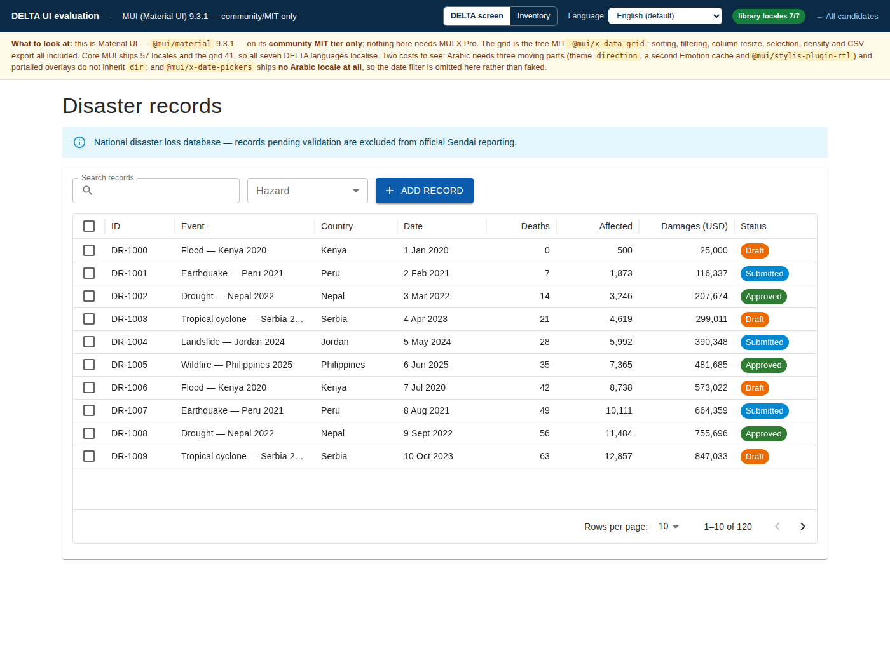
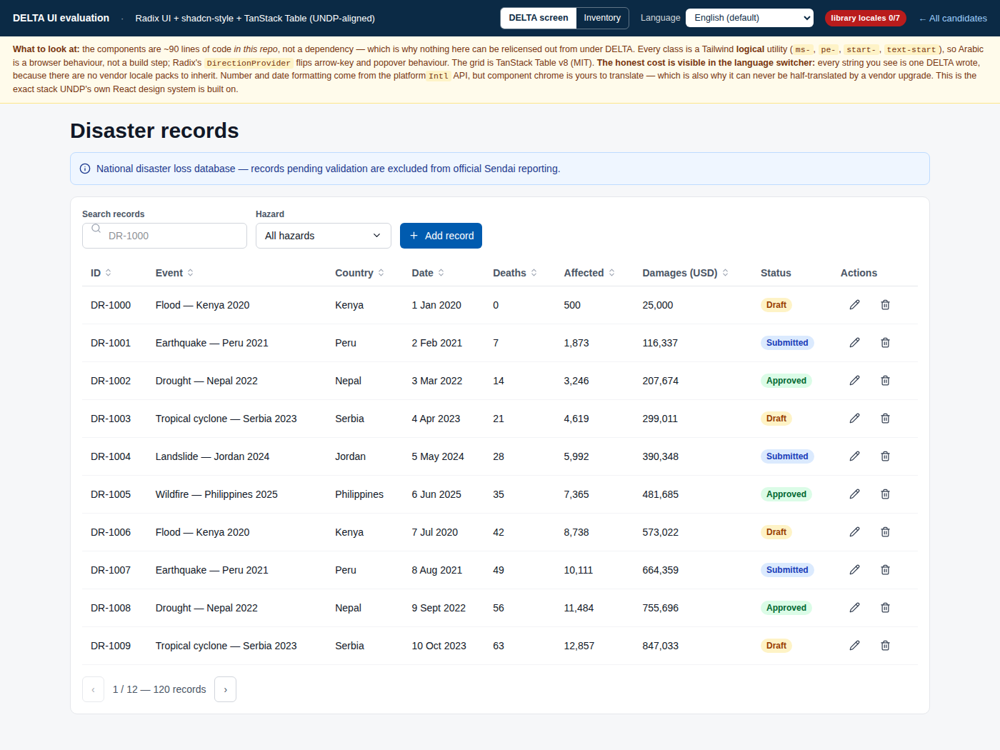
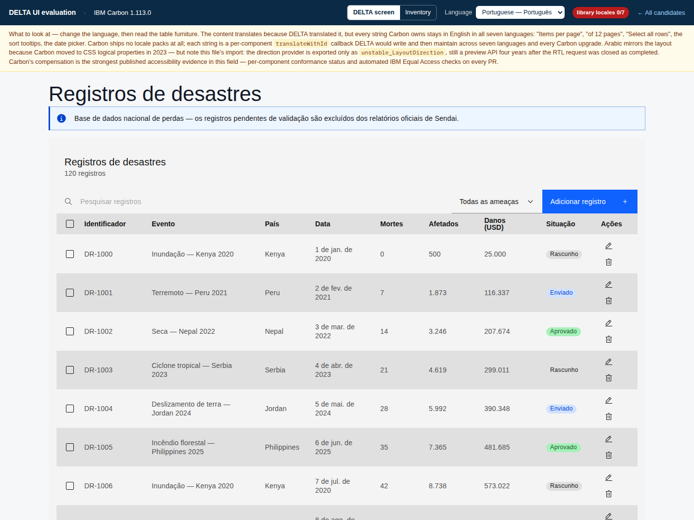
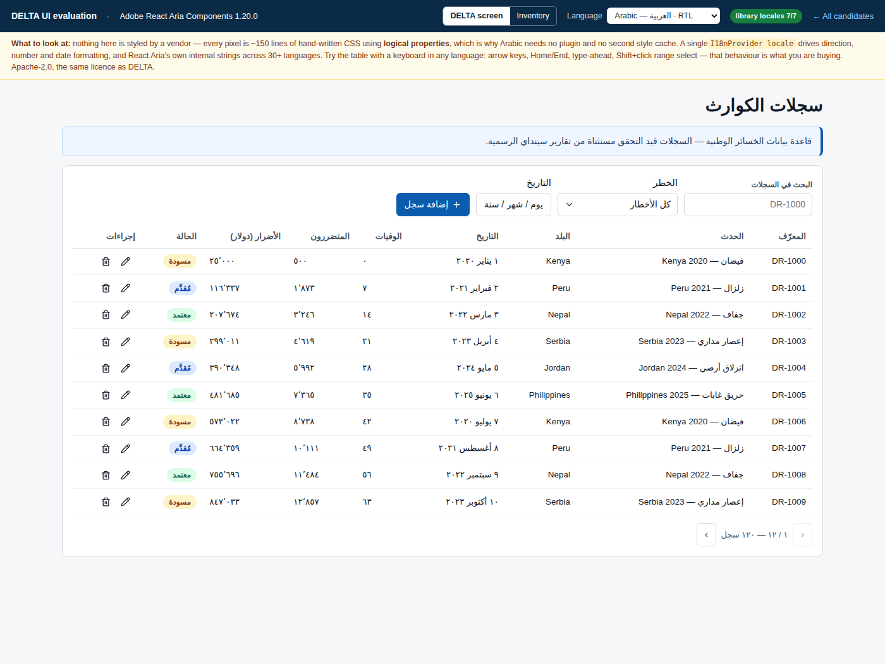

Six candidates, each implementing the same DELTA screen. Every score below is backed by a runnable demo, a measured build, or a line of DELTA source — nothing is scored from documentation alone.
The showcase is presented in English. Every demo also carries a language switcher covering the six official UN languages plus Portuguese, so the design is demonstrably built for them — but English is the default state, not a translated one.
Baseline DELTA-Learning @ d0ebd47 · demos built with Vite 7.3.6 / React 19.2.4 · 11 August 2026
Scores are the analyst's reading of measured evidence against weights proposed here and not ratified by UNDRR. They do not establish accessibility conformance — no candidate in this field publishes a VPAT — and they do not substitute for human accessibility review or for a UNDRR architecture decision. Re-weight the criteria on the Criteria tab and the ranking recomputes.
Weighted against the four criteria UNDRR prioritised: accessibility, styling interoperability, data functionality, and continuity across DELTA, Mangrove and other UNDRR properties.
Read with care. "Continuity" is modelled, not measured — it rests on which stack UNDP's design system and UNDRR's own Mangrove actually use, not on a running multi-property deployment. Accessibility scores rank published evidence and remediability, not conformance.
Failing any of these removes a candidate regardless of score.


DELTA ships seven languages. The question is not whether DELTA's strings translate — they do, in every demo — but whether the library's own strings do: pagination summaries, "select all rows", empty states, column filter menus, date pickers. A library that ships no locale packs hands that work, and its permanent maintenance, to DELTA.


Each candidate ships two pages built from one shared dataset and one shared host shell, so what differs between them is the library and nothing else. Inside every demo: DELTA screen is the disaster-records list — search, hazard filter, nine columns, status tags, row actions, sorting, selection, pagination, a confirm dialog and a toast. Inventory is the kitchen sink of everything DELTA's 33 PrimeReact modules cover. The ع · RTL switch in each demo is the point of the exercise.
aria-sort set, or is the arrow purely visual?Edit a weight and every score on this page recomputes. Weights must total 100.
1 = poor, 5 = strong. Hover any cell for the evidence behind the score.
Total gzip of JS + CSS for the identical screen, from real production builds in one harness. Fonts are counted separately because they are not gzipped again over the wire.
Reproduce: npm install && npx vite build in any
apps/* directory. Set IBM_TELEMETRY_DISABLED=true first — see Build findings.
None of these are in any candidate's documentation. Each was produced by compiling the demo on this page.
license field and not from vendor
marketing. primereact@11.1.0's LICENSE.md was downloaded and read.vite build; figures are gzip of the
emitted assets..tsx,
33 modules, 0 tests selecting on PrimeReact DOM.@mui/material 9.3.1 — Material UI, by MUI (Material-UI SAS). It is evaluated on its
community MIT tier only; MUI X Pro and Premium are excluded by DELTA's licence policy, not by preference.
Note also that Material UI v9 is not built on Base UI — verified from its dependency tree — so MUI's
accessible-primitive work is going into a different product than the one you would adopt.@material/web is a different thing, and is not a candidate. It implements
Material Design 3 as web components rather than React, and its README states plainly: "MWC is in maintenance
mode pending new maintainers." The last stable release is 2.5.0; everything since is nightly builds.
A UN platform with a ten-year horizon should not adopt an unmaintained component layer.d0ebd47 (7 May 2026). Re-baseline against
unisdr/DELTA before committing to estimates.